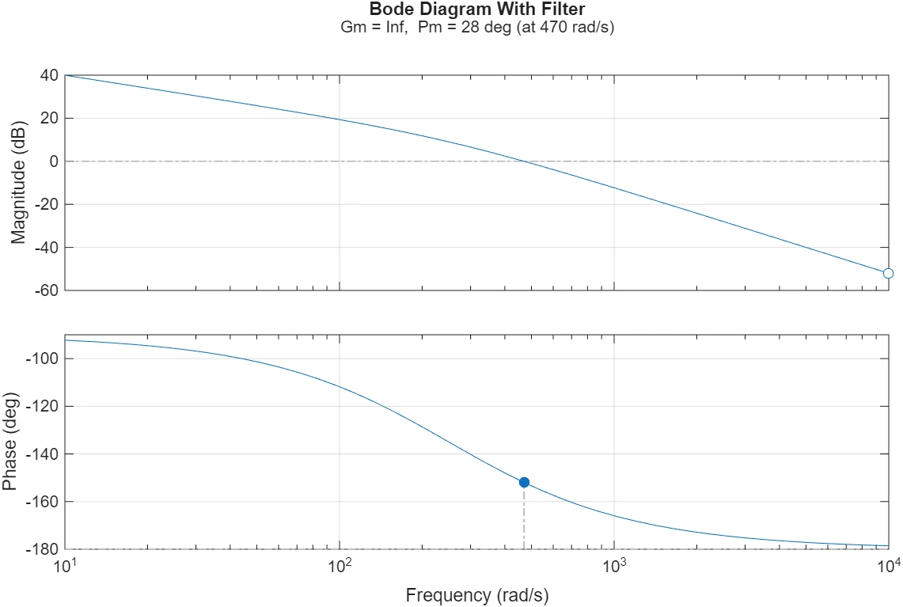

Current filter and phase margin
The phase current measured with the Hall sensors still had noise, so I added a first-order low-pass filter on the measurement. The filter adds phase lag inside the loop. Without it the phase margin is 90°. I chose the lowest cut-off that kept an acceptable margin: 250 rad/s, with 28° at 470 rad/s. In the tests, a lower cut-off made the loop unstable.
